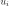
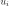

Spearman correlation coefficient¶
This method deals with the parametric modelling of a probability
distribution for a random vector
 . It aims to measure
a type of dependence (here a monotonous correlation) which may exist
between two components
. It aims to measure
a type of dependence (here a monotonous correlation) which may exist
between two components  and .
and .
The Spearman’s correlation coefficient aims to
measure the strength of a monotonic relationship between two random
variables  and
and  . It is in fact equivalent to the
Pearson’s correlation coefficient after having transformed and
to linearize any monotonic relationship (remember that
Pearson’s correlation coefficient may only be used to measure the
strength of linear relationships, see Pearson’s correlation coefficient):
. It is in fact equivalent to the
Pearson’s correlation coefficient after having transformed and
to linearize any monotonic relationship (remember that
Pearson’s correlation coefficient may only be used to measure the
strength of linear relationships, see Pearson’s correlation coefficient):
where and denote the cumulative distribution
functions of and .
If we arrange a sample made up of  pairs
, the
estimation of Spearman’s correlation coefficient first of all requires a
ranking to produce two samples
pairs
, the
estimation of Spearman’s correlation coefficient first of all requires a
ranking to produce two samples  and
and
 . The ranking of the observation
 is defined as the position of in the sample
reordered in ascending order: if is the smallest value in
the sample , its ranking would equal 1; if
is the second smallest value in the sample, its ranking
would equal 2, and so forth. The ranking transformation is a procedure
that takes the sample ) as input data and
produces the sample as an output
result.
. The ranking of the observation
 is defined as the position of in the sample
reordered in ascending order: if is the smallest value in
the sample , its ranking would equal 1; if
is the second smallest value in the sample, its ranking
would equal 2, and so forth. The ranking transformation is a procedure
that takes the sample ) as input data and
produces the sample as an output
result.
For example, let us consider the sample
. We therefore have
![(u_{[1]},u_{[2]}u_{[3]},u_{[4]}) = (2,1,4,3)](../../_images/math/5571db4feb7c05fcea7fe6dd6898dfa536f04f36.svg) .
is in fact the second smallest value in the original,
the smallest, etc.
.
is in fact the second smallest value in the original,
the smallest, etc.
The estimation of Spearman’s correlation coefficient is therefore equal
to Pearson’s coefficient estimated with the aid of the pairs
, , …,
:
where and represent the empirical means of the samples and .
The Spearman’s correlation coefficient takes values between -1 and 1.
The closer its absolute value is to 1, the stronger the indication is
that a monotonic relationship exists between variables and
. The sign of Spearman’s coefficient indicates if the two
variables increase or decrease in the same direction (positive
coefficient) or in opposite directions (negative coefficient). We note
that a correlation coefficient equal to 0 does not necessarily imply the
independence of variables and . There are two
possible situations in the event of a zero Spearman’s correlation
coefficient:
the variables
and are in fact independent,or a non-monotonic relationship exists between
and
.
(Source code, png, hires.png, pdf)
{kind=link}
{kind=link}
(Source code, png, hires.png, pdf)
{kind=link}
{kind=link}
(Source code, png, hires.png, pdf)
{kind=link}
{kind=link}
(Source code, png, hires.png, pdf)
{kind=link}
{kind=link}
Spearman’s coefficient is often referred to as the rank correlation coefficient.
Examples: